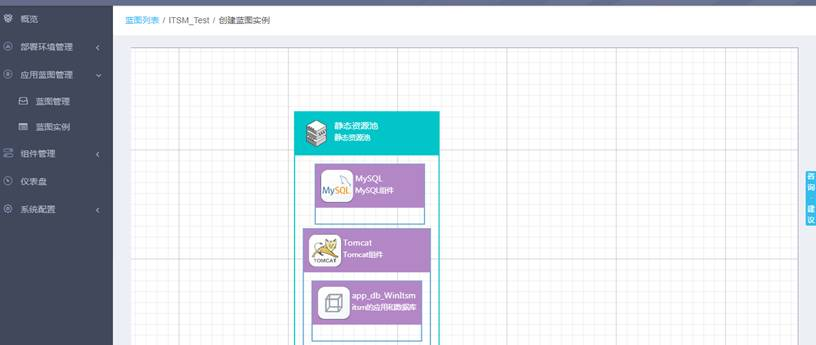
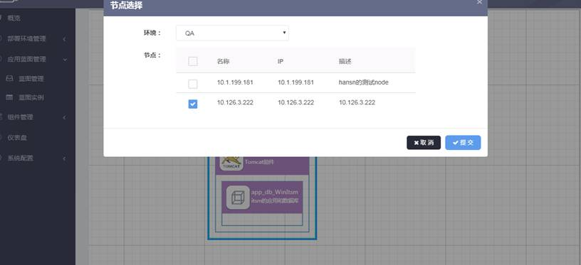
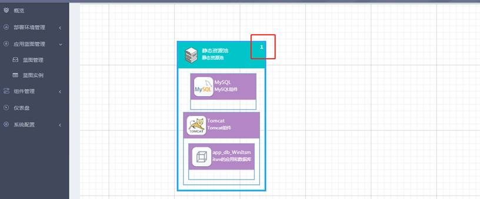
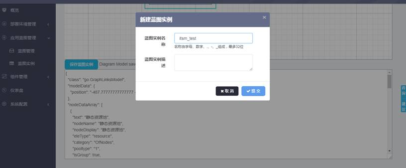

“应用蓝图管理”-->“蓝图管理”，在蓝图列表中选择一个蓝图模板，点击“操作”,选择“创建蓝图实例”按钮，系统跳转创建蓝图实例页面，点击静态资源池中的选择节点，输入资源映射名称后，点击“确定”按钮。


节点选择需要注意节点到少选择一个，点击“确定”按钮后返回到创建蓝图实例页面表，静态资源池中会显示出节点数量，如下图所示：

选择节点后，点击“保存蓝图实例”按钮，输入蓝图实例名称和描述信息后，点击“保存”按钮，蓝图保存成功后在蓝图实例列表中展示。
